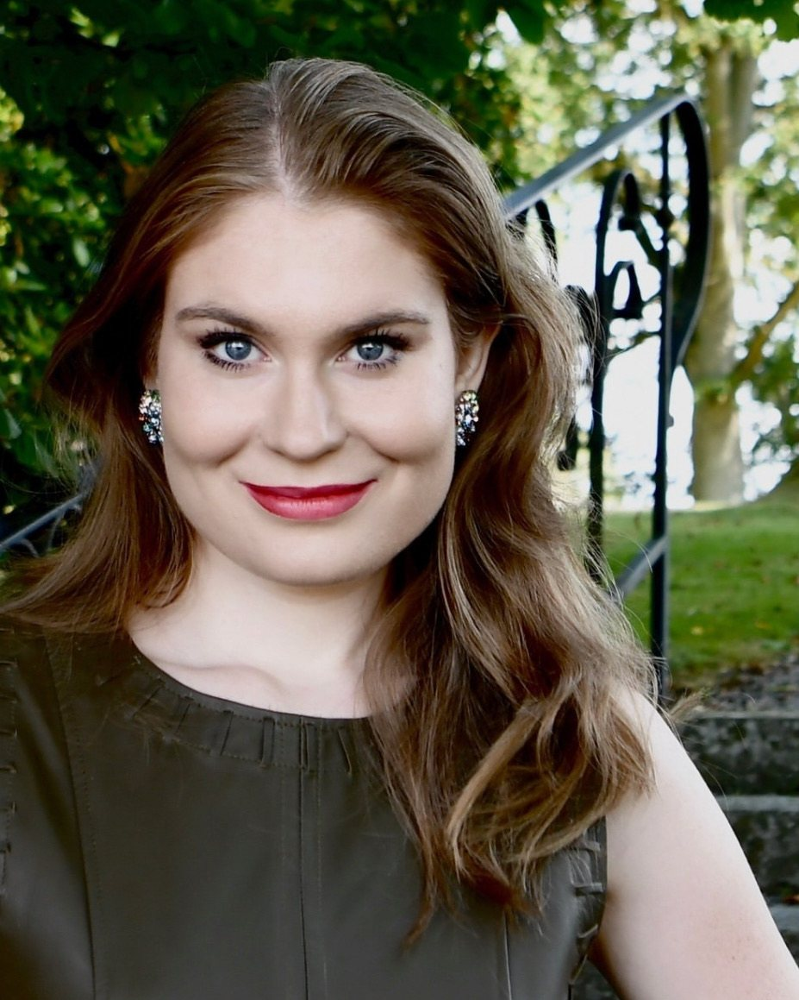
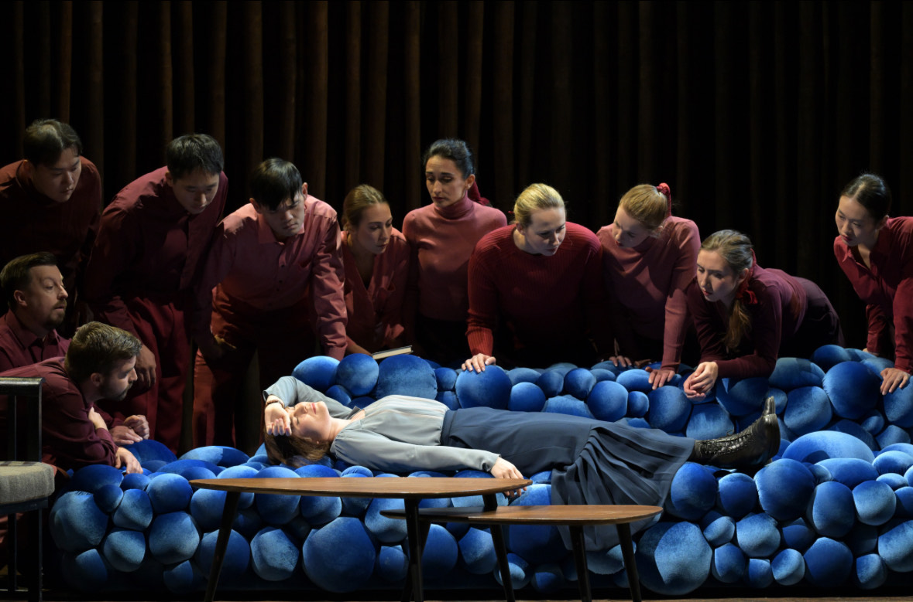
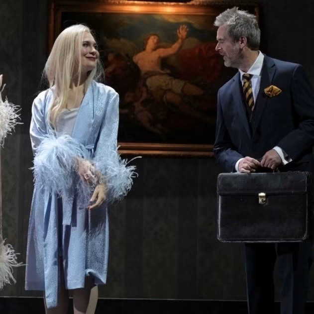
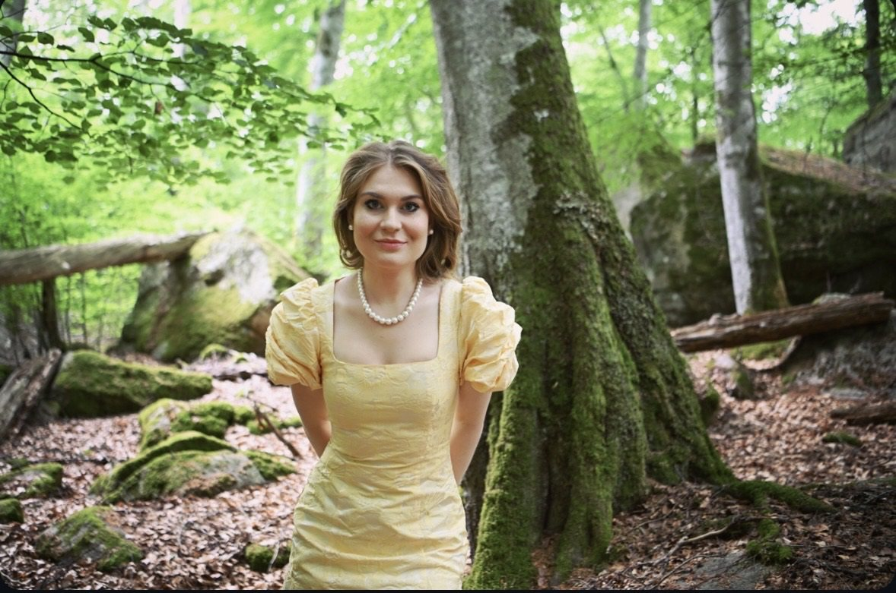

Oper Frankfurt
Karolina Bengtsson
Birgit Nilsson-stipendiat 2025
Denna säsong på Oper Frankfurt
Fiordiligi

Säsong 2026/27
Biljettlänken går till respektive produktion på Oper Frankfurt.
Biografi
Karolina Bengtsson föddes 1997 och växte upp i Huseby, en bruksort i Småland. Hon studerade vid Det Kongelige Danske Musikkonservatorium i Köpenhamn och tog master för Barbara Bonney vid Mozarteum i Salzburg 2023. I romans arbetade hon med Wolfgang Holzmair.
2021 kom hon till operastudion i Frankfurt. Sedan 2023 sjunger hon i solistensemblen. Hon har gästat Bayerische Staatsoper, Festival d’Aix-en-Provence och Innsbrucker Festwochen, och sjungit med Sveriges Radios symfoniorkester och Göteborgs Symfoniker.
Vilken ära! Det känns otroligt att få ta emot Birgit Nilsson-stipendiet. Utöver äran är det också ett erkännande och en uppmuntran att fortsätta följa min dröm.
Nyheter
Utmärkelse
Birgit Nilsson Stipendium 2025
Instiftat av Birgit Nilsson 1973 till minne av hennes första lärare Ragnar Blennow, och sedan dess tilldelat framstående unga svenska sångare. Recitalen 2025 hölls i Birgit Nilssons egen kyrka i Västra Karup den 8 augusti, under Birgit Nilsson Festival.
Tilldelad Birgit Nilsson-stipendiet 2025 om 250 000 kronor, tillkännagivet i maj på Birgit Nilsson Museum.
Musik & video
Ifigenia in Tauride
Inspelad vid Innsbrucker Festwochen der Alten Musik 2025 med Les Talens Lyriques under Christophe Rousset. Karolina sjunger Dori tillsammans med Rocío Pérez och Rafał Tomkiewicz. I augusti 2026 upptogs inspelningen på Preis der deutschen Schallplattenkritiks Bestenliste.
På film
Ascanio in Alba
Mer video på hennes YouTube-kanal (öppnas i ny flik) och hos Braathen Artist Management (öppnas i ny flik).
Kronologi
Visa hela kronologin
Repertoar
Opera
Konsert & romans
Visa hela repertoaren
Opera
Konsert & romans
Konsertengagemang inkluderar Sveriges Radios Symfoniorkester och Göteborgs Symfoniker. Fullständig repertoar på förfrågan.
Galleri



Porträtt

Press
Kort och lång biografi, CV och scenbilder. Skriv fotografens namn.
Pressbilder
Kontakt
Management
Braathen Artist Management
Elisabeth Haglund, Artist ManagerFolkskolegatan 5, SE-117 35 Stockholm
+46 8 556 908 50 elisabeth.haglund@braathenmanagement.com
Länkar
- Profil på Oper Frankfurt (öppnas i ny flik)
- Artistsida hos Braathen Management (öppnas i ny flik)
- Schema på Operabase (öppnas i ny flik)
Pressbilder, biografi och CV finns under Press. Övrigt material via management.